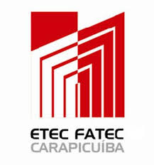

Contexto do Projeto
Fundamentos da pesquisa e motivação
O Desafio Identificado
Este projeto nasceu da análise profunda de um dos principais desafios do agronegócio brasileiro: o desperdício de grãos durante o transporte rodoviário. O Brasil, sendo um dos maiores produtores e exportadores de soja e milho do mundo, perde milhões de toneladas anualmente nas estradas.
A pesquisa concentra-se na BR-163, conhecida como "Rota da Soja", responsável pelo escoamento de aproximadamente 50 milhões de toneladas de grãos por safra, destacando a importância estratégica dessa via para o país.
Objetivo Principal
Analisar as perdas de soja e milho durante o transporte rodoviário na BR-163 (2020-2023) e propor uma solução viável e economicamente sustentável para reduzir essas perdas.
Importância Estratégica
Por que este projeto é relevante para o Brasil?
Metodologia de Pesquisa
Abordagens utilizadas para desenvolvimento do projeto
Abordagem Quantitativa
Utilização de dados mensuráveis e análise estatística para fundamentar as conclusões:
- ✓ Análise de dados secundários de pesquisas no Mato Grosso
- ✓ Processamento de informações estatísticas sobre perdas
- ✓ Gráficos e tabelas comparativas de cenários
- ✓ Cálculos de impacto econômico e ROI de soluções

Nuvem de palavras destacando os principais temas da pesquisa qualitativa
Timeline do Projeto
Cronograma de desenvolvimento de 2023 a 2025
2023 - Início do Curso
Inscrição na ETEC de Carapicuíba, seleção do tema de TCC e início do desenvolvimento acadêmico da pesquisa sobre agronegócio.
2024 - Pesquisa Intensiva
Coleta de dados sobre perdas na BR-163, análise documental aprofundada, criação de gráficos comparativos e desenvolvimento de soluções preliminares. Apresentações intermediárias em sala de aula.
2025 - Conclusão e Apresentações
Desenvolvimento completo de GrainShield, documentação legal da empresa, apresentação para banca examinadora, participação na Feira de Ciências e criação do website do projeto.
Autores do Projeto
Estudantes da ETEC que desenvolveram o TCC GrainShield
Orientadora e Apoio
Profissional que guiou o desenvolvimento do projeto
Resultados Esperados
O que este projeto pretende alcançar
Acadêmico
Conclusão bem-sucedida do TCC com análise rigorosa e apresentação de resultados à banca examinadora.
Prático
Desenvolvimento de uma empresa viável (GrainShield) com documentação legal e modelo de negócios funcional.
Social
Impacto positivo no agronegócio brasileiro através de uma solução que reduz perdas e aumenta eficiência.
Continue Explorando
Aprofunde seu conhecimento sobre o projeto GrainShield